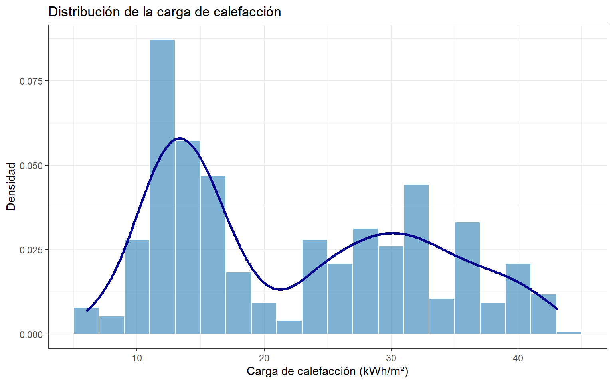
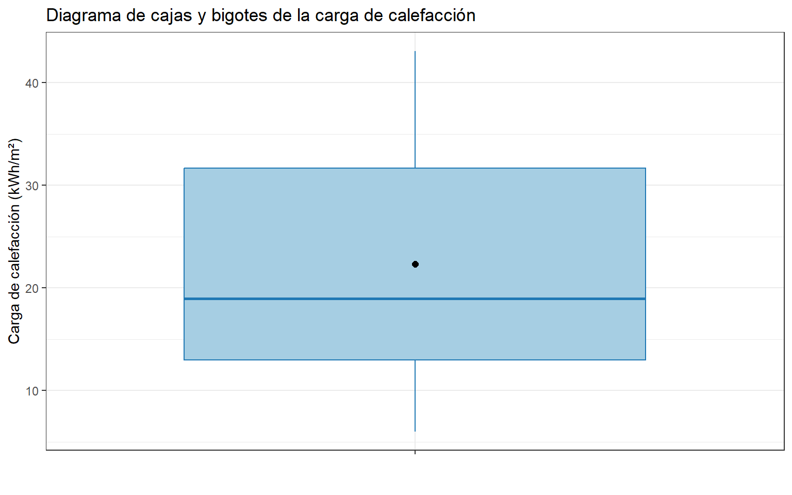
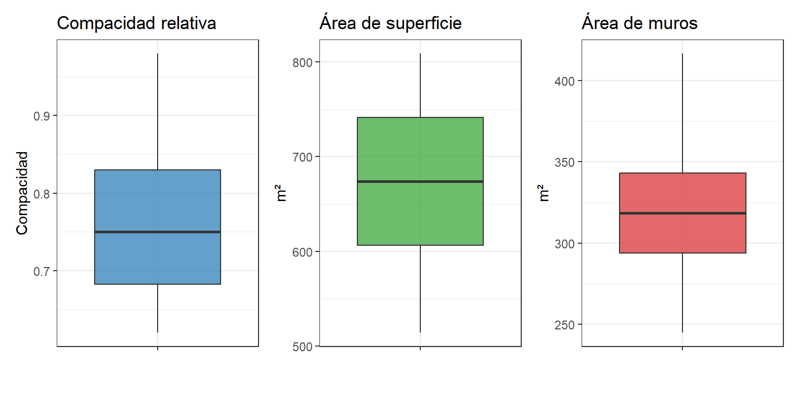
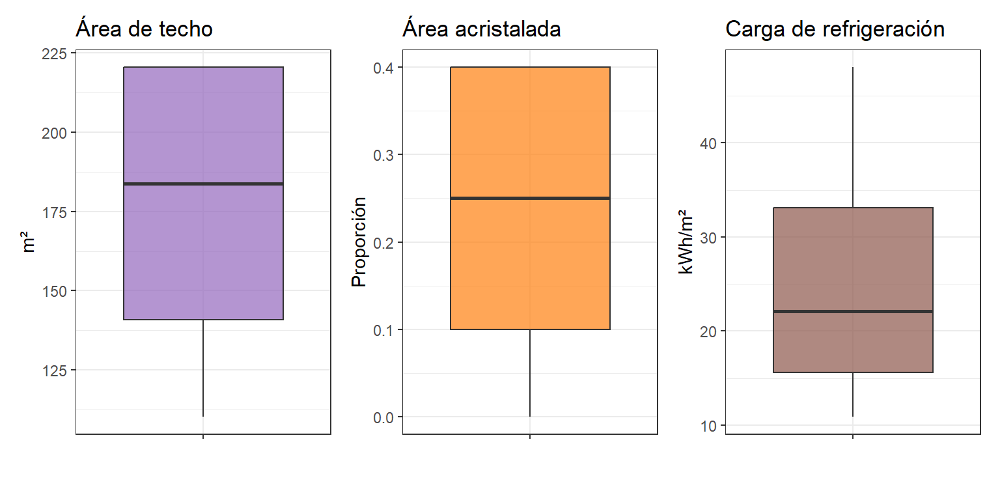
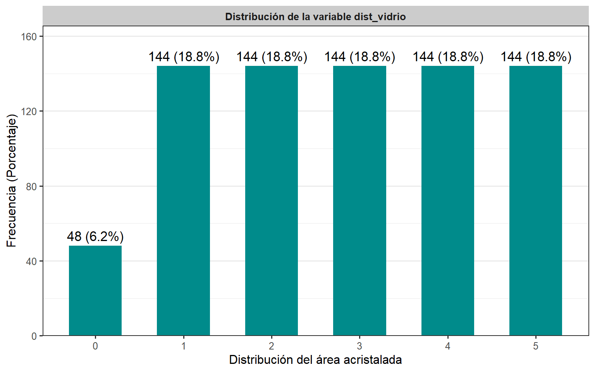
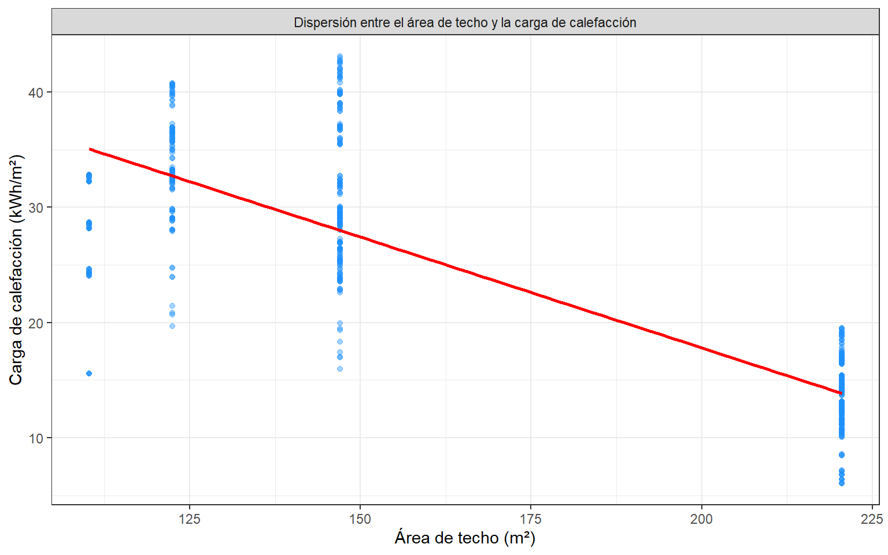
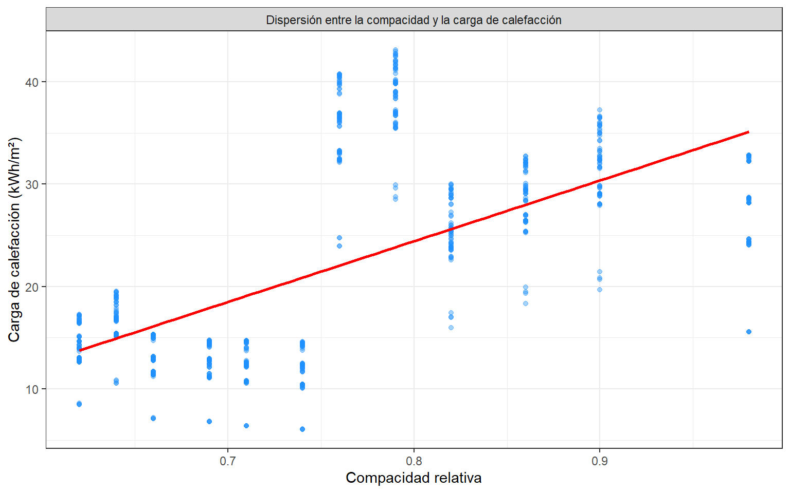
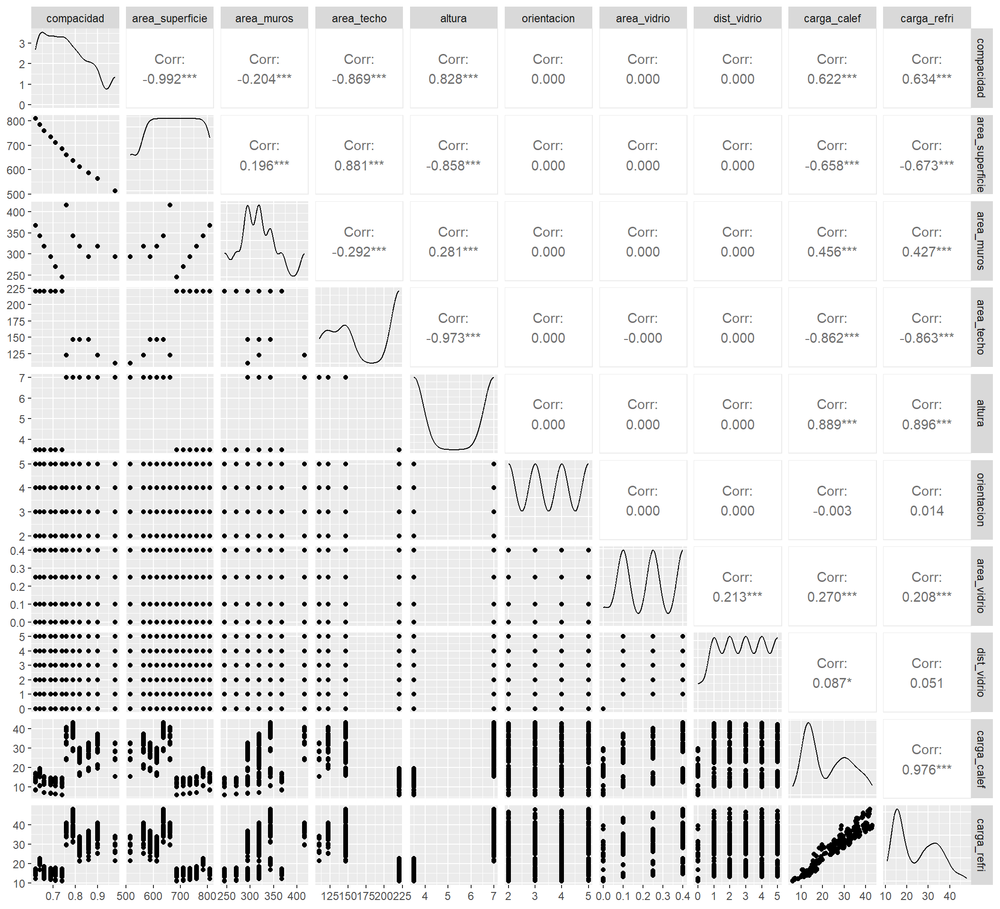

Chapter 4 Análisis exploratorio de datos (EDA)
4.1 Análisis de la variable carga_calef (target)
df %>%
dplyr::summarise(
n = length(carga_calef),
media = mean(carga_calef),
ds = sd(carga_calef),
mediana = median(carga_calef),
minimo = min(carga_calef),
maximo = max(carga_calef),
Q1 = quantile(carga_calef, 0.25),
Q3 = quantile(carga_calef, 0.75),
IQR = IQR(carga_calef)
)## # A tibble: 1 × 9
## n media ds mediana minimo maximo Q1 Q3 IQR
## <int> <dbl> <dbl> <dbl> <dbl> <dbl> <dbl> <dbl> <dbl>
## 1 768 22.3 10.1 19.0 6.01 43.1 13.0 31.7 18.7Interpretación: en promedio, un edificio necesita 22.31 kWh/m² para calentarse, pero hay mucha variación: va desde 6.01 hasta 43.10 kWh/m², y la desviación estándar (10.09) es casi la mitad de la media. La media es mayor que la mediana (18.95), así que hay una cola hacia los valores altos. La mitad central de los edificios está entre 12.99 y 31.67 kWh/m², un rango bastante amplio (IQR = 18.68).
df %>%
ggplot(aes(x = carga_calef)) +
geom_histogram(aes(y = after_stat(density)),
binwidth = 2,
fill = "#2c7fb8",
color = "white",
alpha = 0.6) +
geom_density(color = "darkblue", linewidth = 1.2) +
labs(
title = "Distribución de la carga de calefacción",
x = "Carga de calefacción (kWh/m²)",
y = "Densidad"
) +
theme_bw()
Interpretación: la distribución no tiene forma de campana: tiene dos picos (es bimodal), uno alrededor de 12–15 kWh/m² y otro alrededor de 28–32 kWh/m². Esto suele indicar que en los datos hay dos grupos de edificios bien distintos. Más adelante veremos que esos dos grupos son los edificios de un piso y los de dos pisos.
df %>%
ggplot(aes(x = "", y = carga_calef)) +
geom_boxplot(fill = "#a6cee3", color = "#1f78b4", outlier.color = "red") +
stat_summary(
fun = mean,
geom = "point",
shape = 20,
size = 3,
color = "black"
) +
labs(
title = "Diagrama de cajas y bigotes de la carga de calefacción",
x = "",
y = "Carga de calefacción (kWh/m²)"
) +
theme_bw()
Interpretación: la caja es ancha y la mediana está más cerca del borde inferior, lo que confirma la asimetría hacia la derecha. El punto negro (la media) queda por encima de la mediana. No aparecen valores atípicos (no hay puntos rojos): ningún edificio tiene una carga “rara” frente al resto.
4.2 Análisis de las variables características (independientes)
resumen_numericas <- df %>%
dplyr::select(where(is.numeric), -carga_calef) %>%
pivot_longer(
cols = everything(),
names_to = "variable",
values_to = "valor"
) %>%
group_by(variable) %>%
summarise(
n = sum(!is.na(valor)),
media = mean(valor, na.rm = TRUE),
ds = sd(valor, na.rm = TRUE),
mediana = median(valor, na.rm = TRUE),
minimo = min(valor, na.rm = TRUE),
maximo = max(valor, na.rm = TRUE),
Q1 = quantile(valor, 0.25, na.rm = TRUE),
Q3 = quantile(valor, 0.75, na.rm = TRUE),
IQR = IQR(valor, na.rm = TRUE),
.groups = "drop"
)
resumen_numericas## # A tibble: 9 × 10
## variable n media ds mediana minimo maximo Q1 Q3 IQR
## <chr> <int> <dbl> <dbl> <dbl> <dbl> <dbl> <dbl> <dbl> <dbl>
## 1 altura 768 5.25 1.75 5.25 3.5 7 3.5 7 3.5
## 2 area_muros 768 318. 43.6 318. 245 416. 294 343 49
## 3 area_superf… 768 672. 88.1 674. 514. 808. 606. 741. 135.
## 4 area_techo 768 177. 45.2 184. 110. 220. 141. 220. 79.6
## 5 area_vidrio 768 0.234 0.133 0.25 0 0.4 0.1 0.4 0.3
## 6 carga_refri 768 24.6 9.51 22.1 10.9 48.0 15.6 33.1 17.5
## 7 compacidad 768 0.764 0.106 0.75 0.62 0.98 0.682 0.83 0.147
## 8 dist_vidrio 768 2.81 1.55 3 0 5 1.75 4 2.25
## 9 orientacion 768 3.5 1.12 3.5 2 5 2.75 4.25 1.5Interpretación: las variables viven en escalas muy distintas. Las áreas están en cientos de m² (por ejemplo, el área de superficie va de 514.5 a 808.5 m²), mientras que la compacidad está entre 0.62 y 0.98 y el área de vidrio entre 0 y 0.40. La carga de refrigeración se parece mucho a la de calefacción (media 24.59 frente a 22.31 kWh/m²). Como cada variable tiene pocos valores posibles, sus cuartiles caen justo sobre esos valores, algo típico de un experimento diseñado.
# Boxplot de compacidad
p1 <- df %>%
ggplot(aes(x = "", y = compacidad)) +
geom_boxplot(fill = "#1f77b4", alpha = 0.7) +
labs(title = "Compacidad relativa", y = "Compacidad", x = "") +
theme_bw()
# Boxplot de area_superficie
p2 <- df %>%
ggplot(aes(x = "", y = area_superficie)) +
geom_boxplot(fill = "#2ca02c", alpha = 0.7) +
labs(title = "Área de superficie", y = "m²", x = "") +
theme_bw()
# Boxplot de area_muros
p3 <- df %>%
ggplot(aes(x = "", y = area_muros)) +
geom_boxplot(fill = "#d62728", alpha = 0.7) +
labs(title = "Área de muros", y = "m²", x = "") +
theme_bw()
# Primera fila
p1 + p2 + p3
# Boxplot de area_techo
p4 <- df %>%
ggplot(aes(x = "", y = area_techo)) +
geom_boxplot(fill = "#9467bd", alpha = 0.7) +
labs(title = "Área de techo", y = "m²", x = "") +
theme_bw()
# Boxplot de area_vidrio
p5 <- df %>%
ggplot(aes(x = "", y = area_vidrio)) +
geom_boxplot(fill = "#ff7f0e", alpha = 0.7) +
labs(title = "Área acristalada", y = "Proporción", x = "") +
theme_bw()
# Boxplot de carga_refri
p6 <- df %>%
ggplot(aes(x = "", y = carga_refri)) +
geom_boxplot(fill = "#8c564b", alpha = 0.7) +
labs(title = "Carga de refrigeración", y = "kWh/m²", x = "") +
theme_bw()
# Segunda fila
p4 + p5 + p6
Interpretación: ninguna variable tiene valores atípicos. El área de techo llama la atención: su caja está “aplastada” arriba porque la mitad de los edificios tiene exactamente 220.5 m² de techo (son los de un piso, que ocupan más terreno). La carga de refrigeración tiene una forma muy parecida a la de calefacción, lo que anticipa que ambas están muy relacionadas.
4.3 Variables categóricas
# Tabla de frecuencias para orientacion
tabla_orient <- df %>%
count(orientacion, name = "Frecuencia") %>%
mutate(
Porcentaje = round(Frecuencia / sum(Frecuencia) * 100, 2),
Variable = "orientacion",
Categoria = as.character(orientacion)
) %>%
dplyr::select(Variable, Categoria, Frecuencia, Porcentaje)
tabla_orient## # A tibble: 4 × 4
## Variable Categoria Frecuencia Porcentaje
## <chr> <chr> <int> <dbl>
## 1 orientacion 2 192 25
## 2 orientacion 3 192 25
## 3 orientacion 4 192 25
## 4 orientacion 5 192 25# Tabla de frecuencias para dist_vidrio
tabla_dist <- df %>%
count(dist_vidrio, name = "Frecuencia") %>%
mutate(
Porcentaje = round(Frecuencia / sum(Frecuencia) * 100, 2),
Variable = "dist_vidrio",
Categoria = as.character(dist_vidrio)
) %>%
dplyr::select(Variable, Categoria, Frecuencia, Porcentaje)
tabla_dist## # A tibble: 6 × 4
## Variable Categoria Frecuencia Porcentaje
## <chr> <chr> <int> <dbl>
## 1 dist_vidrio 0 48 6.25
## 2 dist_vidrio 1 144 18.8
## 3 dist_vidrio 2 144 18.8
## 4 dist_vidrio 3 144 18.8
## 5 dist_vidrio 4 144 18.8
## 6 dist_vidrio 5 144 18.8# Tablas de frecuencias para altura y area_vidrio
df %>%
count(altura, name = "Frecuencia") %>%
mutate(Porcentaje = round(Frecuencia / sum(Frecuencia) * 100, 2))## # A tibble: 2 × 3
## altura Frecuencia Porcentaje
## <dbl> <int> <dbl>
## 1 3.5 384 50
## 2 7 384 50df %>%
count(area_vidrio, name = "Frecuencia") %>%
mutate(Porcentaje = round(Frecuencia / sum(Frecuencia) * 100, 2))## # A tibble: 4 × 3
## area_vidrio Frecuencia Porcentaje
## <dbl> <int> <dbl>
## 1 0 48 6.25
## 2 0.1 240 31.2
## 3 0.25 240 31.2
## 4 0.4 240 31.2Interpretación: a diferencia de los datos reales, aquí las categorías están perfectamente balanceadas, porque es un diseño experimental. Cada orientación tiene 192 edificios (25 %), y hay 384 edificios de cada altura (50 % y 50 %). Solo dist_vidrio = 0 y area_vidrio = 0 tienen menos casos (48, el 6.25 %). Esos son los mismos 48 edificios: los que no tienen ventanas. Tiene sentido, porque si no hay vidrio no hay cómo distribuirlo.
tabla_dist_b <- df %>%
count(dist_vidrio, name = "Frecuencia") %>%
mutate(
Porcentaje = round(Frecuencia / sum(Frecuencia) * 100, 1),
Etiqueta = paste0(Frecuencia, " (", Porcentaje, "%)")
)
ggplot(tabla_dist_b, aes(x = factor(dist_vidrio), y = Frecuencia)) +
geom_col(fill = "#008B8B", width = 0.6) +
geom_text(aes(label = Etiqueta), vjust = -0.5, size = 4.5) +
facet_wrap(~ "Distribución de la variable dist_vidrio") +
scale_y_continuous(expand = expansion(mult = c(0, 0.15))) +
labs(
x = "Distribución del área acristalada",
y = "Frecuencia (Porcentaje)"
) +
theme_bw(base_size = 12) +
theme(
plot.title = element_blank(),
strip.background = element_rect(fill = "gray80", color = NA),
strip.text = element_text(face = "bold"),
panel.grid.major.x = element_blank()
)
Interpretación: el gráfico confirma lo de la tabla: las categorías 1 a 5 tienen 144 edificios cada una (18.8 %), y la categoría 0 (sin vidrio) es la minoritaria.
4.4 Análisis exploratorio bivariado
# Diagrama de dispersión: carga_calef vs area_techo
df %>%
ggplot(aes(x = area_techo, y = carga_calef)) +
geom_point(alpha = 0.4, color = "#1E90FF") +
geom_smooth(method = "lm", formula = y ~ x, se = FALSE, color = "red") +
labs(
x = "Área de techo (m²)",
y = "Carga de calefacción (kWh/m²)"
) +
theme_bw() +
facet_grid(. ~ "Dispersión entre el área de techo y la carga de calefacción")
Interpretación: se ve una relación negativa: los edificios con más techo necesitan menos calefacción. Los puntos forman columnas verticales porque el área de techo solo toma cuatro valores. Los edificios con 220.5 m² de techo (los de un piso) tienen cargas claramente más bajas que el resto.
# Diagrama de dispersión: carga_calef vs compacidad
df %>%
ggplot(aes(x = compacidad, y = carga_calef)) +
geom_point(alpha = 0.4, color = "#1E90FF") +
geom_smooth(method = "lm", formula = y ~ x, se = FALSE, color = "red") +
labs(
x = "Compacidad relativa",
y = "Carga de calefacción (kWh/m²)"
) +
theme_bw() +
facet_grid(. ~ "Dispersión entre la compacidad y la carga de calefacción")
Interpretación: aquí la relación es positiva: a mayor compacidad, mayor carga de calefacción. Pero la nube no es una línea limpia. Hay un salto, porque los edificios más compactos de estos datos son también los de dos pisos.
# Resumen de carga_calef por altura
altura_calef <- df %>%
group_by(altura) %>%
summarise(
n = length(carga_calef),
media = mean(carga_calef),
ds = sd(carga_calef),
mediana = median(carga_calef),
minimo = min(carga_calef),
maximo = max(carga_calef),
Q1 = quantile(carga_calef, 0.25),
Q3 = quantile(carga_calef, 0.75),
IQR = IQR(carga_calef),
.groups = "drop"
) %>%
mutate(
variable = "altura",
niveles = as.character(altura)
) %>%
dplyr::select(variable, niveles, everything(), -altura)
altura_calef## # A tibble: 2 × 11
## variable niveles n media ds mediana minimo maximo Q1 Q3 IQR
## <chr> <chr> <int> <dbl> <dbl> <dbl> <dbl> <dbl> <dbl> <dbl> <dbl>
## 1 altura 3.5 384 13.3 2.67 13.0 6.01 19.5 11.6 15.1 3.52
## 2 altura 7 384 31.3 5.95 31.7 15.6 43.1 27.0 36 8.99Interpretación: aquí aparecen los dos picos del histograma. Los edificios de un piso (3.5 m) tienen una carga media de 13.34 kWh/m², y los de dos pisos (7 m) de 31.28 kWh/m², más del doble. Los rangos casi no se cruzan: el máximo de los de un piso (19.52) apenas supera el mínimo de los de dos pisos (15.55). La altura es, por ahora, la variable que más separa a los edificios.

Interpretación: esta red de gráficos resume todo en una sola imagen. Se notan tres cosas importantes:
carga_calefycarga_refrivan casi en línea recta (correlación cercana a 0.98): un edificio que gasta mucho en calefacción también gasta mucho en refrigeración.- Varias predictoras están muy relacionadas entre sí. Por ejemplo,
compacidadconarea_superficie(casi −0.99) yalturaconarea_techo(casi −0.97). Esto anticipa problemas de multicolinealidad en la regresión múltiple. orientacionno muestra relación con nada: su correlación con la carga es prácticamente cero.